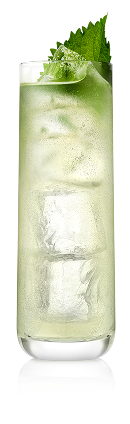
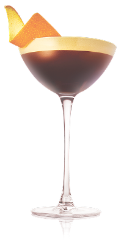

SELECT A COCKTAIL


Toki Highball
A whisky blended for crafting highballs. The House of Suntory crafted Toki using a bolder grain whisky from the Chita Distillery, with more flavor than is typical in blended whiskies.